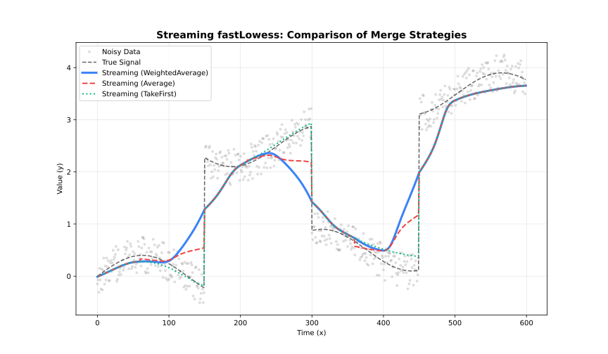

Streaming Adapter
Process large datasets in chunks with configurable overlap.
When to Use
- Dataset >100,000 points
- Memory-constrained environments
- Batch processing pipelines
Parameters
| Parameter | Default | Description |
|---|---|---|
chunk_size | 5000 | Points per chunk |
overlap | 500 | Overlap between chunks |
merge_strategy | "weighted_average" | How to merge overlaps |
Merge Strategies
| Strategy | Behavior |
|---|---|
"average" | Average overlapping values |
"weighted_average" | Distance-weighted blend |
"take_first" | Keep left chunk values |
"take_last" | Keep right chunk values |

Example
using FastLOWESS
using Random, Statistics
rng = MersenneTwister(42)
x = collect(range(0, 2π, length=100))
y = sin.(x) .+ randn(rng, 100) .* 0.3
model = StreamingLowess(;
fraction=0.3,
iterations=2,
chunk_size=5000,
overlap=500,
merge_strategy="average"
)
process_chunk(model, x, y)
result = finalize(model)
println("First smoothed value: ", result.y[1])First smoothed value: 0.3556534632575713